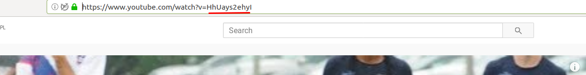

Strona w dobrym stylu
NaCoBeZu
- Wiem w jaki sposób mogę osadzać style css.
- Wiem jak osadzać obrazky na strone html.
- Umiem formatować tekst w dokumencie html.
-
Umiem stworzyć prostą stronę o moim hobby
- Ze zdjęciem z internetu
- Z tekstem w ramce
- Z odnośnikiem
Co możemy zrobić w html poza stroną internetową
- CV
- Zaproszenie
- Inne dokumenty
Jak zobaczyć cudzą stronę internetową
Umieszczenie obrazków
Aby umieścić obrazek należy podać jego źródło z internetu i użyć elementu img i atrybutu src
Zródło src należy podać w postaci linka np: https://nauczanie.ssobiepanek.pl/logo.png
<img src="https://nauczanie.ssobiepanek.pl/logo.png">
Obrazek wyśrodkowany
<div style="text-align: center;"> <img src="https://nauczanie.ssobiepanek.pl/logo.png"> </div>
Umieszczenie odnośników
Aby umieścić odnośnik należy podać jego źródło z internetu i użyć znacznika a i atrybutu href.
Zródło src należy podać w postaci linka np: https://ssobiepanek.pl/html
<a href="https://ssobiepanek.pl/html">
Jeżeli obrazek jest zapisany w tym samym folderze co plik .html w atrybucie src można podać nazwę pliku z grafiką.
<img src="frisbee.jpg">
Umieszczenie video
Aby umieścić video należy podać jego źródło z internetu i użyć znacznika iframe i atrybutu src.
Aby uzyskać link do filmu z YouTube tak by można było go wstawić na własna stronę należy znaleźć id filmu.
i poprzedzić go
https://www.youtube.com/embed/. Przykładowy znacznik
<iframe class="video" src="https://www.youtube.com/embed/HhUays2ehyI"> </iframe>
Formatowanie tekstu
Więcej formatowań
Ważny tekst na stronie
Ważny tekst na stronie
Ważny tekst na stronie
<p style="border: solid 1px; border-color:#b9936c; background-color:#dac292; color:#e6e2d3; margin: 100px;"> Ważny tekst na stronie </p> <p style="border: solid 2px; border-color:#3e4444; background-color:#82b74b; color:#405d27; margin: 10px;"> Ważny tekst na stronie </p> <p style="border: solid 5px; border-color:#c83349; background-color:#e06377; color:#eeac99; margin-top: 10px; margin-left: 200px; margin-right: 200px; "> Ważny tekst na stronie </p>
<DOCTYPE html>
<head>
<meta charset="utf-8">
<meta title="Ultimate frisbee">
</head>
<style type="text/css">
body {
font-size: 10pt;
color: #040f3d;
background-color: #ebe1e6;
padding: 20pt;
font: 14pt Lato, Verdana, Geneva, Arial, Helvetica, sans-serif;
}
h1 {
font-weight: bold;
text-transform: uppercase;
}
img {
padding: 3pt;
border-radius: 15px;
}
.center {
text-align: center;
}
.important {
background-color: #4bffa5;
font-style: italic;
margin: 30pt;
padding: 10px;
border-radius: 15px;
border-style: solid;
}
.video {
margin: 30px;
width: 420px;
height: 315px;
}
</style>
<body>
<h1 class="center important">Ultimate frisbee</h1>
<div class="center">
<img src="frisbee.jpg">
</div>
<p class="important">
<b>Ultimate</b> – gra zespołowa z użyciem latającego dysku (frisbee) łącząca w sobie elementy koszykówki, piłki nożnej, piłki ręcznej i rugby. Jest bardzo
dynamiczna i widowiskowa, od graczy wymaga wytrzymałości, szybkości i zręczności, lecz jednocześnie proste zasady czynią ją bardzo łatwą do opanowania dla
początkujących. Podstawowymi zasadami ultimate są brak fizycznego kontaktu pomiędzy graczami oraz fair play.
</p>
<h2>Zasady rozgrywki</h2>
<p>
W rozgrywce uczestniczą dwie siedmioosobowe drużyny. Boisko do gry ma wymiary 100 × 37 metrów, lecz wymiary mogą ulec nieznacznej zmianie, w zależności od warunków i
możliwości organizatorów meczu. Na obu końcach boiska znajdują się strefy punktowe długości 18 m (zwane "zonami"). Drużyna atakująca zdobywa punkty łapiąc frisbee w
strefie punktowej (zonie) przeciwnika, zaś drużyna broniąca stara się jej przeszkodzić i przejąć frisbee. Zawodnicy nie mogą biegać z frisbee, po złapaniu dysku
należy się zatrzymać i nie odrywając jednej nogi od podłoża, rzucić go do następnego zawodnika. Jeżeli dysk upadnie na ziemię, zostanie złapany poza boiskiem,
zostanie przechwycony lub strącony na ziemię przez zawodnika drużyny broniącej, inicjatywę przejmuje drużyna która wcześniej broniła, a drużyna atakująca przechodzi
do obrony. W przypadku rozgrywek na piasku lub hali wielkość boiska ulega zmniejszeniu. Najczęściej w takich warunkach na boisku gra pięciu zawodników.
</p>
<p class="important">
W ultimate frisbee nie uczestniczą sędziowie. Wszystkie kwestie sporne rozwiązują sami zawodnicy w myśl zasady fair play. W wypadku różnicy zdań sporne zagranie jest
powtarzane.
</p>
<div class="center" >
<a href="https://pl.wikipedia.org/wiki/Ultimate">Źródło: wikipedia</a>
</div>
<div class="center">
<iframe class="video" src="https://www.youtube.com/embed/HhUays2ehyI">
</iframe>
</div>
</body>